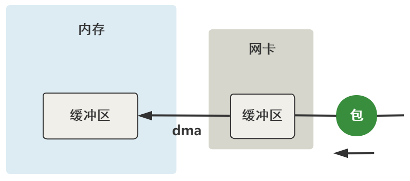

内核是如何接收一个网络包的
一、准备工作
内核版本5.14.14
注册软中断
Linux的软中断都是在专门的内核线程ksoftirqd中进行的。该进程的数量等于机器的核数。
root@ubuntu:~# ps aux | grep ksoft
root 12 0.0 0.0 0 0 ? S 18:16 0:00 [ksoftirqd/0]
root 20 0.0 0.0 0 0 ? S 18:16 0:00 [ksoftirqd/1]
root 26 0.0 0.0 0 0 ? S 18:16 0:00 [ksoftirqd/2]
root 32 0.0 0.0 0 0 ? S 18:16 0:01 [ksoftirqd/3]
系统初始化时，调用spawn_ksoftirqd来创建出ksoftirqd进程。
当ksoftirqd被创建出来以后，它就会进入自己的线程循环函数ksoftirqd和ksoftirqd了。不停地判断有没有软中断需要被处理。
static struct smp_hotplug_thread softirq_threads = {
.store = &ksoftirqd,
.thread_should_run = ksoftirqd_should_run,
.thread_fn = run_ksoftirqd,
.thread_comm = "ksoftirqd/%u",
};
static __init int spawn_ksoftirqd(void)
{
...
BUG_ON(smpboot_register_percpu_thread(&softirq_threads));
return 0;
}
early_initcall(spawn_ksoftirqd);
static int smpboot_thread_fn(void *data)
{
struct smpboot_thread_data *td = data;
struct smp_hotplug_thread *ht = td->ht;
while (1) {
...
if (!ht->thread_should_run(td->cpu)) {
preempt_enable_no_resched();
schedule();
} else {
__set_current_state(TASK_RUNNING);
preempt_enable();
ht->thread_fn(td->cpu);
}
}
}
注册硬中断
以Intel e1000 网卡驱动为例，找到e1000_main.c源码：
static struct pci_driver e1000_driver = {
...
.name = e1000_driver_name, // 驱动名称
.probe = e1000_probe, // 设备插入内核时调用
.remove = e1000_remove, // 设备从内核移除时调用
.shutdown = e1000_shutdown, // 设备关闭时调用
...
};
static int __init e1000_init_module(void)
{
...
// 注册网卡驱动
ret = pci_register_driver(&e1000_driver);
...
}
static void __exit e1000_exit_module(void)
{
// 注销网卡驱动
pci_unregister_driver(&e1000_driver);
}
可以看到probe是关键，那probe什么时候被调用的呢？（很多网上文章说是在call_driver_probe里面调用，其实还没说到底，仔细看会发现函数定义类型不一样）
struct pci_driver {
...
int (*probe)(struct pci_dev *dev, const struct pci_device_id *id); /* New device inserted */
...
};
struct bus_type {
...
int (*probe) (struct device *dev);
...
};
struct device_driver {
...
int (*probe) (struct device *dev);
...
};
那我们继续看pci_register_driver的实现
struct bus_type pci_bus_type = {
...
.name = "pci",
.probe = pci_device_probe,
...
};
int __pci_register_driver(struct pci_driver *drv, struct module *owner,
const char *mod_name)
{
/* initialize common driver fields */
...
drv->driver.bus = &pci_bus_type; // 这一步会设置总线类型
...
spin_lock_init(&drv->dynids.lock);
INIT_LIST_HEAD(&drv->dynids.list);
/* register with core */
return driver_register(&drv->driver);
}
在pci_device_probe -> pci_call_probe -> local_pci_probe ->中找到了：
static long local_pci_probe(void *_ddi)
{
...
pci_dev->driver = pci_drv;
rc = pci_drv->probe(pci_dev, ddi->id);
...
}
所以，网卡驱动probe调用链为：pci_register_driver -> driver_register -> bus_add_driver -> __driver_attach -> driver_probe_device -> really_probe -> call_driver_probe -> bus的probe -> pci_device_probe -> pci_call_probe -> local_pci_probe
这里有必要简单说下，
bus、driver、device的区别：bus：总线（Bus）是指计算机组件间规范化的交换数据（data）的方式，即以一种通用的方式为各组件提供数据传送和控制逻辑。如果说主板（Mother Board）是一座城市，那么总线就像是城市里的公共汽车（bus），能按照固定行车路线，传输来回不停运作的比特（bit）。-- wikipediadriver：驱动程序，提供操作的软件接口。device：设备就是连接在总线上的物理实体。

那下面接着看probe的具体做了些什么：
static const struct net_device_ops e1000_netdev_ops = {
.ndo_open = e1000_open,
.ndo_stop = e1000_close,
.ndo_start_xmit = e1000_xmit_frame,
.ndo_do_ioctl = e1000_ioctl,
...
};
static int e1000_probe(struct pci_dev *pdev, const struct pci_device_id *ent)
{
...
// 设置net_device_ops
netdev->netdev_ops = &e1000_netdev_ops;
// 注册ethtool实现函数
e1000_set_ethtool_ops(netdev);
// NAPI初始化，注册poll函数（e1000_clean）
netif_napi_add(netdev, &adapter->napi, e1000_clean, 64);
// 获取MAC地址
e1000_read_mac_addr(hw);
// 注册net_device
strcpy(netdev->name, "eth%d");
err = register_netdev(netdev);
...
}
上面网卡驱动初始化都完成后，就可以启动网卡了。当启动一个网卡时，net_device_ops中的e1000_open会被调用。
int e1000_open(struct net_device *netdev)
{
...
// 分配RingBuffer，分配RX、TX队列内存，DMA初始化
err = e1000_setup_all_tx_resources(adapter);
err = e1000_setup_all_rx_resources(adapter);
// 注册中断处理函数（e1000_intr）
err = e1000_request_irq(adapter);
// 启用NAPI
napi_enable(&adapter->napi);
...
}
当做好以上准备工作后，就可以开始接收数据包了。
二、从网线到网卡

总之这个过程，实质上就是把网线中的高低电平，转换到网卡上的一个缓冲区中存储着。
三、从网卡到内存
数据到达了网卡这个硬件的缓冲区中，现在要把它弄到内存中的缓冲区。 
这个过程完全不需要 CPU 参与，只需要 DMA 这个硬件设备，DMA 等网卡的缓冲区有数据到来时，把它拷贝到内存里。

四、硬中断处理
当DMA操作完成后，网卡会向CPU发起一个硬中断，通知CPU有数据到达。
上面我们说了，硬中断处理函数是e1000_intr
static irqreturn_t e1000_intr(int irq, void *data)
{
...
__napi_schedule(&adapter->napi);
...
}
static inline void ____napi_schedule(struct softnet_data *sd, struct napi_struct *napi)
{
...
// 把napi挂到softnet_data链表上
list_add_tail(&napi->poll_list, &sd->poll_list);
// 触发收包软中断（仅仅对变量的一次或运算）
__raise_softirq_irqoff(NET_RX_SOFTIRQ);
...
}
上面可以看到，硬中断处理过程真的非常短。只是记录了一个寄存器，修改了CPU的poll_list，然后发出软中断。